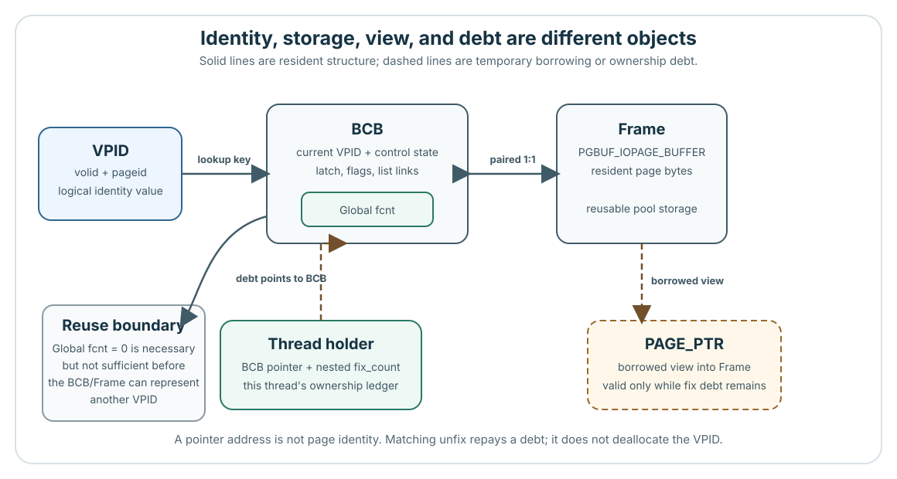
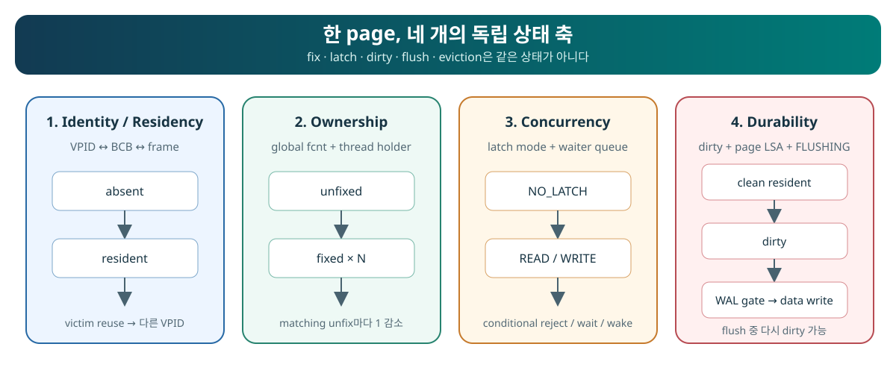

H1은 이름이고, 프레임은 자리입니다
VPID는 볼륨 번호와 페이지 번호로 데이터베이스 페이지를 식별합니다. 프레임은 페이지 바이트를 담는 재사용 가능한 메모리 자리입니다. BCB는 그 프레임과 짝을 이루며 현재 페이지의 이름과 접근·교체 제어 상태를 기록합니다. 페이지가 저장장치에 존재해도 메모리에 올라와 있지 않을 수 있습니다.
| 객체 | 현재 상태의 예 | 나중에 안전하게 재사용한 뒤 |
|---|---|---|
| 페이지 이름 | H1 | S1 |
| 프레임 42 | H1의 바이트 | S1의 바이트 |
| BCB 42 | H1과 제어 상태 기록 | S1과 제어 상태 기록 |
이 표는 객체를 구분하기 위한 예입니다. 교체 대상을 결정한 결과나 버퍼 풀의 크기를 뜻하지 않습니다. 재사용하면 연결된 페이지 이름과 바이트가 달라지고, BCB와 프레임의 메모리는 그대로 남습니다. fix가 성공하면 PAGE_PTR로 접근을 빌리며, 그 fix에 대응하는 unfix를 하면 빌린 접근의 사용도 끝내야 합니다.
제어 상태에는 아직 끝나지 않은 사용(fcnt), 함께 허용할 수 있는 내용 접근(page latch), 보존이 필요한 변경(dirty)이 따로 있습니다. 교과서 모델을 본 뒤 각각의 규칙을 살펴봅니다. 어느 하나만으로 프레임을 덮어써도 된다고 판단할 수는 없습니다.
객체와 계약의 근거
Contract and Objects에서 고정 리비전의 계약과 객체 수명을 확인할 수 있습니다. BCB와 프레임의 짝: page_buffer.c:5559–5660; fix와 해제: 2260–2685, 3062–3201.
교과서 모델로 넘어갈 때는 상태를 새로 시작합니다
다음 페이지의 반복 페이지 P/R은 H1/H2에, 스캔 페이지 S/T/U는 S1/S2/S3에 대응합니다. P → H1, R → H2, S → S1, T → S2, U → S3라는 대응은 워크로드에서 맡은 역할만 옮깁니다. 프레임 세 개 F0/F1/F2, 빈 초기 상태, hit 횟수는 교과서 모델에만 적용됩니다. 정책마다 독립적으로 시작합니다.
CUBRID로 돌아오면 더 큰 버퍼 풀의 별도 시작 상태에서 점유량, zone, age, quota를 정합니다. 프레임 세 개의 임계값이나 마지막 내용을 가져오면 안 됩니다.
객체 구간은 여기까지입니다. 교과서 기초부터 예측 문제까지 본 뒤 동시 사용으로 바로 이동합니다. 전체 커리큘럼의 데이터베이스·내구성 연결 강의는 별도 경로로 남아 있습니다.
페이지 내용만으로는 왜 부족할까?
어떤 스레드가 데이터베이스 파일의 페이지 P를 요청한다고 합시다. 다음 요청에서도 쓸 수 있도록 P를 메모리에 남겨 두고 싶습니다. 나중에는 메모리가 꽉 찬 상태에서 다른 페이지 Q도 들어와야 합니다. 이 과정을 안전하게 처리하려면 무엇을 기억해야 할까요?
1. VPID — 우리가 요청한 페이지는 무엇인가?
메모리 주소만 기억하면 안 될까요? 주소는 지금 바이트가 있는 위치를 알려 줍니다. P가 나간 뒤에는 같은 주소에 Q가 들어올 수 있습니다. 따라서 현재 메모리 위치와 별개로, 요청한 페이지를 식별할 이름이 필요합니다.
VPID는 볼륨 번호와 페이지 번호로 페이지를 식별합니다. 이 예시에서 P와 Q의 VPID는 서로 다릅니다. 페이지 식별자를 확인하지 않으면 P를 요청한 쪽에 Q의 내용을 줄 수 있습니다. VPID를 안다고 해서 그 페이지가 이미 메모리에 있다는 뜻은 아닙니다.
2. Frame 배열 — P의 내용은 어디에 둘까?
P의 이름을 알면 내용도 얻은 걸까요? 아닙니다. P를 읽으려면 페이지 내용을 담을 실제 메모리가 필요합니다. 이처럼 재사용하는 메모리 자리 하나가 frame입니다. CUBRID는 pool을 초기화할 때 frame 배열을 만듭니다.
왜 정해진 수의 자리를 재사용할까요? 새로운 페이지를 읽을 때마다 메모리를 계속 할당하고 보관하면 메모리 사용량이 끝없이 늘어납니다. 크기가 제한된 pool에서는 일부 페이지를 보관하다가, 결국 어떤 자리를 다른 페이지에 내줘야 합니다.
예를 들어 frame 42에는 지금 P가 있고 나중에는 Q가 들어올 수 있습니다. Frame은 자리이고, VPID는 현재 그 자리에 있는 페이지를 식별합니다. 이 자리를 안전하게 재사용하려면 페이지 내용 외에도 알아야 할 것이 있습니다.
3. BCB 배열 — frame 42를 덮어써도 될까?
Q를 넣을 자리가 필요합니다. P의 주소를 안다는 이유만으로 P를 교체해도 될까요? 아직 P를 읽는 스레드가 있다면 작업 도중 Q의 내용을 보게 될 수 있습니다. P에 아직 저장하지 않은 변경이 있다면 덮어쓰는 순간 그 변경을 잃을 수 있습니다.
그래서 각 frame에는 현재 페이지의 식별자와 제어 상태를 기록하는 buffer control block(BCB)이 있습니다. CUBRID는 frame 하나마다 BCB 배열의 항목 하나를 짝지어 둡니다.
- Fix count(
fcnt): 허용된 사용 중 아직 끝나지 않은 것이 몇 개인가? Fix는 접근을 허용하고, 대응하는 unfix는 그 사용을 끝냅니다. 양수인 동안에는 일반적인 frame 재사용을 막습니다. - Page latch: 어떤 읽기나 변경을 동시에 허용할 것인가? P를 메모리에 남겨 두는 것만으로는 서로 충돌하는 접근을 막지 못합니다.
- Dirty 상태: 아직 저장해야 할 변경이 있는가? 마지막 사용자가 떠나도 변경을 저장할 의무는 남습니다.
각 정보는 서로 다른 질문에 답합니다. fcnt == 0이라고 해서 “빈 자리”나 “덮어써도 되는 자리”는 아닙니다. 현재 페이지가 P에서 Q로 바뀌어도 BCB와 frame 자체는 같은 객체입니다.
4. Resident hash — P가 이미 들어와 있을까?
두 번째 스레드도 P를 요청합니다. 저장장치에서 다시 읽어야 할까요? 먼저 P가 이미 buffer pool에 있는지 확인해야 합니다. 이렇게 메모리에 들어와 있는 상태를 resident라고 합니다.
모든 BCB의 VPID를 하나씩 확인해도 찾을 수는 있습니다. 하지만 요청할 때마다 pool 전체를 뒤지는 일이 반복됩니다. Resident hash는 요청한 VPID를 이용해 찾아볼 BCB 후보를 좁혀 줍니다.
같은 hash bucket에 있으면 P를 찾은 걸까요? 아닙니다. 서로 다른 VPID가 같은 bucket에 들어갈 수 있고, 동시에 일어나는 재사용도 처리해야 합니다. 조회 과정은 필요한 보호 아래에서 실제 식별자를 확인합니다. 이 확인을 생략하면 후보를 찾은 것을 요청한 페이지를 찾은 것으로 착각할 수 있습니다.
5. Invalid list — 아직 페이지가 없는 자리는 어디일까?
Pool이 막 시작했습니다. P를 넣으려면 다른 페이지를 내보내야 할까요? 아닙니다. Frame은 이미 있지만, 처음에는 resident 페이지가 배정되지 않은 상태입니다.
Invalid list는 resident 페이지 식별자가 없는 BCB들을 연결합니다. 할당 경로는 이 목록을 통해 아직 쓰지 않는 자리를 찾을 수 있습니다. 여기서 “invalid”는 데이터베이스 페이지가 손상되었다는 뜻이 아닙니다.
이 목록 없이도 관리할 수 있을까요? BCB를 훑는 식으로 미배정 자리를 찾을 다른 방법이 필요합니다. 그런 추적 방법이 전혀 없다면 빈 자리를 놓치고 불필요하게 resident 페이지를 교체하려 할 수 있습니다. Fix가 0인 resident P는 다릅니다. 그 자리에는 여전히 P가 있습니다.
6. LRU 배열 — 빈 자리가 없으면 어디부터 찾을까?
Q가 들어와야 하는데 모든 frame에 페이지가 있습니다. 무엇을 내보낼까요? 유용한 페이지는 남기고 덜 유용한 페이지를 교체 후보로 보고 싶습니다. 사용 양상을 고려하지 않으면 곧 다시 필요한 페이지를 계속 내보냈다가 다시 읽을 수 있습니다.
CUBRID는 BCB들을 여러 교체 목록으로 관리하고, 각 목록을 zone으로 나눕니다. LRU 배열에는 각 목록의 양 끝과 zone 경계 등을 관리하는 descriptor가 들어 있습니다. 교체 정책은 이 구조를 이용해 후보를 찾습니다.
LRU descriptor도 BCB인가요? 아닙니다. BCB 하나는 frame 하나를 설명합니다. LRU descriptor 하나는 여러 BCB가 들어 있는 목록을 관리합니다. 두 배열은 서로 다릅니다.
교체 후보가 되면 P를 덮어써도 될까요? 아닙니다. 목록의 위치는 후보 선택을 돕습니다. 실제 재사용 가능 여부는 보호 아래에서 fix, dirty/flushing, waiter 등의 조건을 확인해야 결정됩니다. 이 확인이 없으면 후보 순서를 잘 정해도 변경을 잃거나 사용 중인 자리를 재사용할 수 있습니다.
P의 fix는 모두 끝났지만 dirty 상태입니다. Q가 들어올 자리가 필요합니다. P의 자리는 이제 빈 자리일까요?
이유 살펴보기
아닙니다. BCB는 여전히 P를 식별하고, frame에는 P의 내용이 있으며, dirty 상태는 보존해야 할 변경이 있음을 나타냅니다. Fix가 0이라는 것은 허용된 사용이 남아 있지 않다는 뜻일 뿐입니다. Invalid list는 미배정 자리를 관리합니다. 이 resident 페이지를 교체하려면 변경을 저장하고 보호 아래에서 조건을 다시 확인해야 합니다.
초기화는 배열을 만들고, miss는 그 자리를 재사용한다
기존 manager를 재사용하지 않는 boot 경로에서 두 형제 helper가 BCB/frame 저장 공간과 shared/private LRU descriptor 배열을 만든다. 첫 helper가 두 번째 helper를 호출하는 것은 아니다. LRU는 비어 있고, 처음 사용하지 않는 BCB는 invalid list로 연결된다. 이후 BCB[42]가 P, 다음에는 Q를 나타내더라도 BCB 객체 자체는 그대로다.
logtb_define_trantable
→ logtb_define_trantable_log_latch
→ pgbuf_initialize
├→ pgbuf_initialize_bcb_table
└→ pgbuf_initialize_lru_list소스 위치 펼치기
고정 소스: log_tran_table.c:383–495 · page_buffer.c:1748–1763 · page_buffer.c:5559–5785
Frame 하나와 두 가지 사용 기록

BCB와 frame은 일대일로 연결됩니다. PAGE_PTR는 frame 안의 내용을 가리키며, 해당 fix를 unfix할 때 사용 권한이 끝납니다. 주소가 같아도 그 이후에는 다른 페이지의 내용일 수 있습니다.
fcnt: 모든 스레드에 걸쳐 아직 반납하지 않은 fix 수입니다.- Holder: 어느 스레드가 어느 BCB를 몇 번 fix했는지 기록합니다. 같은 스레드가 중첩해서 fix할 수도 있습니다.
소스: holder, atomic-latch fcnt, BCB, paired frame의 정의는 pinned page_buffer.c:460–555에 있습니다. table의 일대일 pairing은 5559–5660에서 확인할 수 있습니다.
미리 만든 frame과 BCB를 재사용한다
512 MiB buffer와 16 KiB 페이지를 가정하면 frame은 32,768개이며 BCB도 같은 수입니다. Fix할 때마다 frame을 새로 할당하지 않습니다. BCB, hash, holder 같은 관리 정보는 설정된 페이지 용량 외에 메모리를 더 사용합니다.
구조체·할당 개수·메모리 비용 펼치기
여섯 이름이 각각 독립된 allocation 하나를 뜻하는 것은 아닙니다. VPID는 값이고, BCB와 frame은 pool array이며, PAGE_PTR는 빌려 쓰는 pointer입니다. Global fcnt는 각 BCB 안의 field이고 holder는 thread별 ledger entry입니다. 아래 기본 상태는 pinned baseline의 512 MiB data buffer와 16 KiB I/O page size를 가정합니다.
| 객체 | 구체적인 표현 | 기본 할당과 시작 상태 | 기억할 크기 경계 |
|---|---|---|---|
VPID | struct vpid { int32_t pageid; short volid; }. 논리적인 lookup key로 복사하고 비교하는 값입니다. | Pool 전체를 위한 VPID array는 없습니다. 32,768개 BCB가 각각 현재 값 하나를 저장하고 null identity로 시작합니다. Caller와 storage metadata가 다른 VPID 값을 가져도 그것만으로 resident가 되지는 않습니다. | 선언된 field는 32-bit page identifier와 short volume identifier입니다. Memory의 sizeof(VPID)에는 ABI padding이 들어갈 수 있고 직렬화된 layout은 별도 storage contract입니다. |
| BCB | Private PGBUF_BCB record 하나가 contiguous BCB_table에 들어 있습니다. 현재 VPID, BCB mutex, atomic latch tuple, flags, waiter/hash/LRU link, age counter, oldest unflushed LSA와 frame pointer를 담습니다. | BCB 32,768개를 한 번 할당합니다. 모든 BCB는 null VPID, PGBUF_LATCH_INVALID, global fcnt = 0, INVALID-list membership으로 시작합니다. | num_buffers × sizeof(PGBUF_BCB)로 예산을 잡습니다. 정확한 record size는 private하고 build에 따라 달라지며 Interface promise가 아닙니다. |
| Frame | PGBUF_IOPAGE_BUFFER 하나가 contiguous iopage_table에 들어 있습니다. BCB back-pointer와 실제 FILEIO_PAGE를 담고, index i는 BCB[i]와 영구적으로 짝지어집니다. | 32,768 frames × 16 KiB가 설정된 frame bytes 512 MiB가 됩니다. 각 page header는 null identity와 unknown type으로 시작하며, 이 bytes는 아직 resident page를 나타내지 않습니다. | 설정된 512 MiB는 page image 크기입니다. Back-pointer, alignment, BCB, hash, holder와 다른 metadata는 추가 memory를 사용합니다. |
PAGE_PTR | typedef char *PAGE_PTR. Frame 안의 page payload를 가리키며 descriptor도 소유권이 있는 allocation도 아닙니다. | 시작할 때 PAGE_PTR table을 만들지 않습니다. Successful fix마다 해당 acquisition을 위한 view를 반환하고 matching unfix에서 그 view의 사용 권한이 끝납니다. | sizeof(PAGE_PTR)는 platform pointer size이지 노출하는 page size가 아닙니다. 여기서 명시한 기본값에서는 이 pointer를 포함하는 frame이 16 KiB입니다. |
Global fcnt | 각 BCB의 64-bit atomic latch tuple 안에서 latch mode, waiter 존재 여부와 함께 pack된 int32_t fcnt입니다. 별도로 할당한 object가 아니라 field입니다. | BCB당 하나이므로 counter도 32,768개이며 모두 0에서 시작합니다. 같은 thread의 nested fix를 포함해 successful fix마다 global debt가 증가합니다. | Atomic tuple 전체가 64 bits입니다. Positive fcnt는 ordinary reuse를 막지만 0만으로 clean 또는 eligible victim임을 증명하지는 않습니다. |
| Thread holder | PGBUF_HOLDER entry는 fix_count, BCB pointer, free/held-list link, performance state와 watcher link를 저장합니다. Thread마다 64-byte PGBUF_HOLDER_ANCHOR 하나가 free/held list의 head를 가집니다. | 각 thread는 free list에 미리 확보된 holder entry 7개를 두고 held list는 빈 상태로 시작합니다. 첫 fix가 entry 하나를 bind하고 같은 thread의 nested fix는 그 entry를 재사용합니다. 부족하면 backing storage가 10개 단위로 증가합니다. | sizeof(PGBUF_HOLDER)는 build에 따라 크게 달라집니다. NDEBUG가 없으면 entry마다 64 KiB fix-site text도 포함합니다. Binding은 마지막 nested unfix에서 끝나지만 storage는 pool-owned로 남습니다. |
sizeof(PGBUF_BCB), sizeof(PGBUF_HOLDER), padding, mutex layout과 debug footprint를 stable ABI claim으로 만들면 안 됩니다.소스: value와 view는 VPID fields와 PAGE_PTR alias에서 정의합니다. Holder constant는 pinned page_buffer.c:86–94, holder, atomic-latch, BCB, frame layout은 460–555, BCB/frame construction은 5559–5660, holder initialization은 5926–5996에 있습니다. Ownership contract는 canonical six-object explanation, default count 계산은 Lecture 0012B에서 이어서 보세요.
메모리·페이지·접근 권한의 수명은 다르다
메모리 자리
BCB와 frame은 pool 초기화부터 종료까지 유지됩니다.
현재 페이지
P가 나가고 Q가 들어오면 같은 자리가 다른 페이지를 나타냅니다.
한 번의 사용
성공한 fix부터 대응하는 unfix까지 해당 접근 권한이 유지됩니다.
페이지 상태를 네 질문으로 나누기

- Resident? 어떤 페이지가 메모리에 있는가?
- Fixed? 아직 이 frame을 사용 중인 fix가 있는가?
- Latch? 지금 내용을 읽거나 변경할 권한은 누구에게 있는가?
- Dirty / flushing? 저장해야 할 변경이 남았는가, 사본을 기록 중인가?
한 항목의 답이 다른 항목의 답을 결정하지는 않습니다. 사용이 끝난 페이지도 dirty일 수 있습니다.
사용은 끝났지만 변경 내용은 남아 있다
페이지 P가 resident이고, fcnt == 0, NO_LATCH, DIRTY라고 합시다.
- 현재 사용자는 없지만 P는 메모리에 남아 있습니다.
- 변경 내용이 있으므로 곧바로 덮어쓸 수는 없습니다.
- 재사용하려면 변경 내용 처리와 dirty/flushing, waiter 등의 보호된 재검사가 필요합니다.
성공이 보장하는 것과 보장하지 못하는 것
Fix 성공은 해당 페이지를 사용할 권한을 얻었다는 뜻입니다. Clean 상태나 트랜잭션 완료를 보장하지는 않습니다.
Fix 성공과 반환 이후의 조건
정상 READ fix가 성공하면 resident identity mapping, 이 acquisition을 포함한 양수의 fix debt, grant된 READ page latch, borrowed pointer lifetime이 성립합니다. 성공만으로는 clean/dirty, durable 여부, record 존재, 올바른 transaction locking, caller correctness를 보장하지 않습니다.
fcnt가 양수로 남을 수 있습니다. ownership을 release했다고 durability state가 바뀌지도 않습니다.소스: 정상 successful-fix postcondition과 matching release는 canonical Core 설명에서 연결합니다. pinned path는 page_buffer.c:2260–2685, 6277–6634, 3062–3201입니다.
Fix count가 0이면 빈 자리일까?
BCB가 P를 가리키고 fcnt == 0이며 DIRTY입니다. 지금 Q를 덮어써도 될까요?
설명 펼치기
안 됩니다. 사용자가 없어도 P는 resident이고 변경 내용은 남아 있습니다. 재사용에는 dirty/flushing, waiter 등의 상태와 보호 아래의 재검사가 필요합니다.